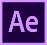
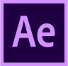

RISD Museum Rebrand
Identity design & Branding

 

Background
Since its establishment, RISD Museum has undergone several identity revisions. However, I felt that its
current identity still lacked awareness and consistency. The logo, only visible on a handful of posters
outside the museum and a few pages on the website, wasn’t standardized across the museum’s materials. Many
are even unaware that a logo exists. As part of my graphic design studies at the Rhode Island School of
Design, I completed a rebranding for RISD Museum with the intention of exploring the field of branding while
further familiarizing myself with Adobe design softwares.
Goal
Create a new identity systi of RISD Museum that can:
1.Be applied to a wide range of materials to make it immediately
recognizable
2. Establish a place in memories
3. Reflect the museum's brand
To achieve this goal, I divided my design process into six steps-follow along below!
1.Research
Purpose: understand the client needs to develop an appropriate
visual language.
To construct a well-defined identity, I first need to understand RISD Museum as a whole. I presented
myself
with the following guidelines to carry out my research of the museum, and created a moodboard to present all
my findings. Sources I used (apart from Google of course) ranged from the museum’s official site, interviews
with museum staff & RISD faculties, online reviews, to personal visits (multiple times, shoutout to free
student admissions!).I also examined current identity to find out what I like & want to change.

2.Discovery
Purpose: identify elements/images to use in the development of the identity
.
After the initial research, I performed a visual distillation with the goal of generating keywords that
I
want to focus on during my design.I generated 5 final keywords, then organized my data, in the form of
images or texts, according to their relevance to these keywords.
I used a wordcloud to visualize the most occurring words in the museum’s mission & values, which I can use
in my logo design as guidelines. I also noticed recurring elements of juxtaposition in multiple categories
of my initial research, from how the museum displays both student’s hand-drawn work and ancient Greek
sculptures to how the museum’s modern exterior stands out from its neighboring New England buildings.

3.Extraction
Purpose: develop a logo that communicates the essence of RISD museum to the public.
This is where my keywords come into play! Using them as guidelines, I looked into how I can extract the
potential of visuals in their respective categories to eventually develop a graphic symbol, by working them
into type, integrate textures, apply colors & image…the list goes on.
I performed 5 rounds of iterations, each time creating 5 variations of the logo. At the end of each
iteration, I asked 5 different individuals for feedback whose backgrounds ranged from professors, museum
employees, to international students.
The final logo is an amalgamation of RISD Museum’s values and characteristics. expressing the core
essense of the museum to the public. The complementary & analogous colors within the middle R represent the
museum’s promotion of diversity, while the variety of grunge brush strokes that the colors are presented in
symbolizes the museum’s focus on creators of art.The handwritten R with the typed RISD & MUSEUM texts, as
well as mixing contrasting color swatches, is a reflection of juxtaposition throughout the museum, whether
in its old vs new architecture, or traditional vs modern exhibits. Inspired by the diverse textures of the
letterprint machine, brush strokes of various textures and opacities are combined in the R to showcase
diversity.
4.Standardize
Purpose: create a visual guideline for consistency
In adherence to the free-spirited and creative nature of the museum & to highlight the museum's
affiliation with RISD, I decided to not impose a strict color limit to the logo.
Rather, it simply has to follow the official RISD guidelines of using any “strong, bold, and rich
colors,”especially colors with “distinc material qualities” or “vibrant pantone colors not easily
produced in 4-color process printing”. For my logo, I specifically chose a set of colors to represent the
museum's rich, diverse, and vibrant art culture.
In terms of typography, I chose Franklin Gothic due to its desirable qualities as headers- bold while
being clean and legible display.
5.Communicate
Purpose: highlight the museum’s unique identity across a broad range of platforms
Using my newly-created logo, I developed a series of products to showcase the museum's identity. I
experiemented with various forms and applications of my logo through different mediums.
6.Feedbacks
Purpose: gather ideas for future improvements
After presenting the final identity manual to a wide range of audiences, I received invaluable
suggestions regarding this project's future directions.
The logo was very well-received, with many indicating that it gave them a feeling of "celebrating art" and
"diversity", both of which serve as the museum' core values.. My
use of unrestricted colors also received positive feedbacks, with a student stating how it "allows the
museum to unleash its creativity".
Some improvements I can make include creating more merchandise since the audiences wished to see more
applications of this logo.
Since I only made one home page for the website, many also suggested that I make more frames, and also a
mobile version, to explore more possibilities within the digital realm.